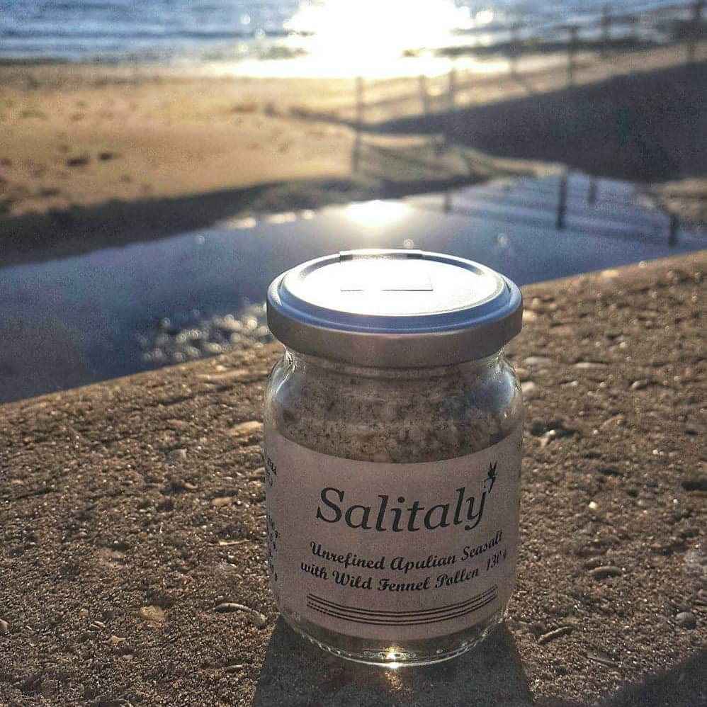

A Sprinkle of Magic on Every Meal
Salitaly imports to England a truly natural Italian salt that is obtained from the evaporation of the sea without artificiality or industrial processing. Only the wind and the sun are used for drying the sea brine by Mediterranean Salt Farmers as they harvest by hand the crystals with love and dedication. The Romans believed that sea salt was endowed with special energetic properties and contained the spirit of the Deity. For this reason Rome, like other Italian Cities, was built near a Saltworks that was situated near the mouth of the Tiber River. The important minerals and trace elements that are present in our Italian salt, ecologically extracted with manual dexterity and respect for Life, are 75 (Calcium, Magnesium, Boron, Lithium, Iodine, Fluorine, Phosphorus, etc..). None of these are removed from our Sea Salt. The advantages to body and spirit that comes from using Salitaly’s naturally harvested salts are impressive: from calm disposition, stress relief and improved physical wellbeing.